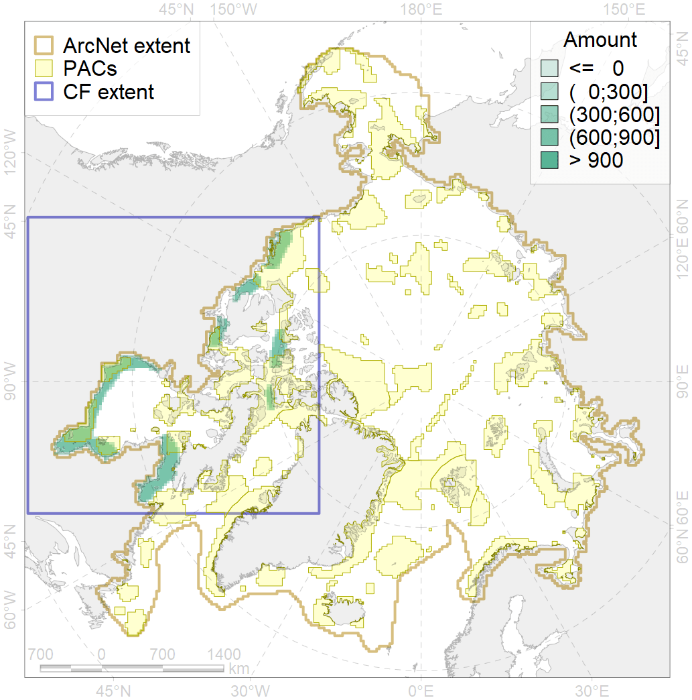
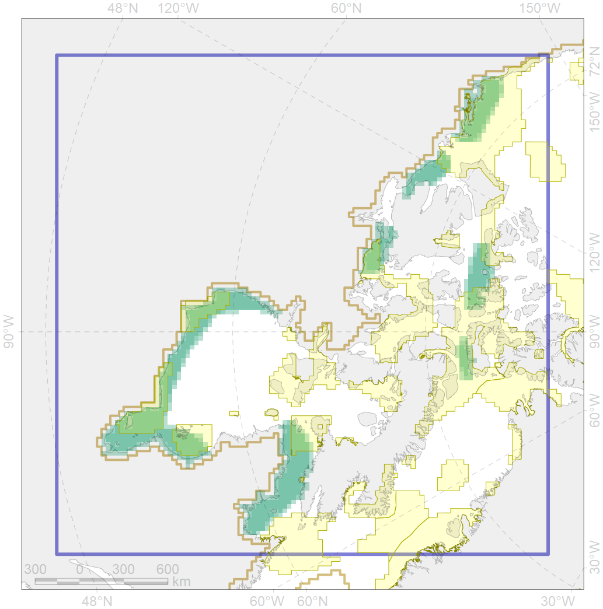

4007

| CF ID | 4007 |
| CF Name | Feeding/nursery area of the Cisco (Coregonus artedi) |
| Time Period | 1940s-2010s |
| Source(s) | Chernova 2011 Coad Reist 2018 |
| Seasonality | January-December |
| Depth Horizon | coastal waters, lower limits unknown |
| Methodology | Compiled from literature sources based on field observations |
| Author Name | N. Chernova |
| Notes | Chernova (2011) compiled the data of: Dunbar, Hildebrand, 1952; Schneider, 1970; Scott, Crossman, 1973; Coad, Reist, 2004 |
| Conservation Target Set in the Scenario | 0.324 |
| Conservation Target Achieved in the Scenario | 0.462 (Scenario: 142.5%) |
| PAC ID | Proportion in the PAC | Contribution to ArcNet Target Achievement | PAC’s Contribution to the Achieved Target |
|---|---|---|---|
| 52 | 4.3% | 12.6% | 8.9% |
| 62 | 11.8% | 33.4% | 23.4% |
| 63 | 0.7% | 1.7% | 1.2% |
| 65 | 3.6% | 9.7% | 6.8% |
| 69 | 6.1% | 16.8% | 11.8% |
| 70 | 10.8% | 29.6% | 20.8% |
| 71 | 5.1% | 14.6% | 10.2% |
| 73 | 3.1% | 7.7% | 5.4% |
| 75 | 0.1% | 0.1% | 0.1% |
| inner | 45.5% | 126.4% | 88.7% |
| outer | 53.3% | 16.2% | 11.3% |